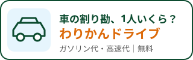

会のホームページに、
「わりかんドライブ」を貼れます
山行や遠征で車に乗り合わせるとき、会員のみなさんが1人いくらかをすぐ出せます。登録なし・無料です。貼るのにご連絡は要りません。
1. 絵のボタン

下の文を写して、ホームページの貼りたい所に入れてください。
2. 文字だけのリンク
アメブロ・FC2・ホームページを作る道具で
「HTML を入れる」「HTML 編集」などの欄に貼ってください。その欄が無い道具では、2. の文字のリンク（https://dxbears1972-maker.github.io/club-calendar/warikan/）を、ふつうのリンクとして入れてください。
わりかんドライブは、実費（ガソリン代・高速代・駐車料金）を分け合うための計算です。作っているのは DXベアーズです。ご質問は LINE か お問い合わせ から。